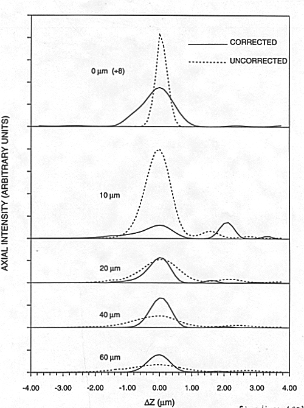

Fig. 3. Simulated axial point response for a confocal fluorescence microscope at various depths below the coverslip in an aqueous medium, with (solid curves) and without (dashed curves) a binary corrector designed for 40-micro-meters depth. [[Delta]] z is measured at the stage (i.e., toil). Axial FWHM is improved by 40-50% over the range 20-60 micro-meters.